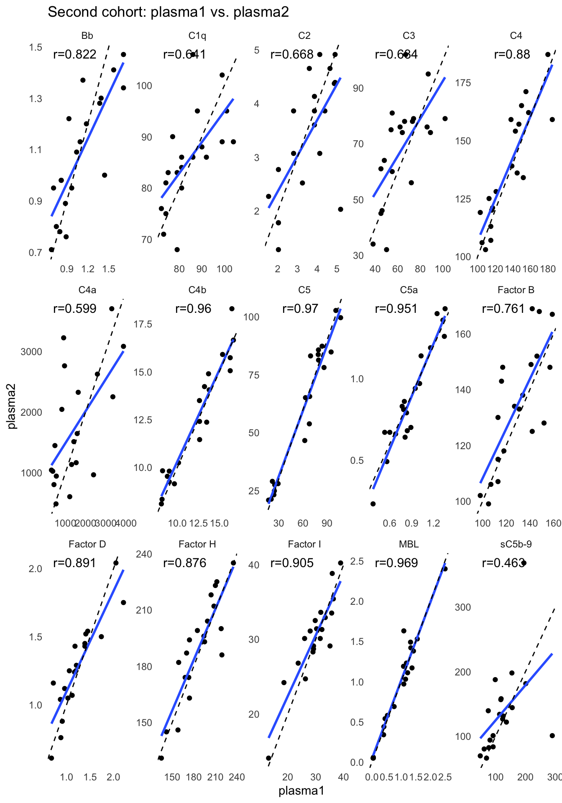

Chapter 2 Complement assays in a second cohort confirms elevation of complement components
The second cohort consists of 41 FSHD subjects and 17 controls. Here, we performed a parallel analysis, as for the first cohort, on 15 tested components including Bb, C2, C4b, C5, C5a, Factor D, MBL, Factor I, C1q, C3, C4, Factor B, Factor H, C4a, sC5b-9.
suppressPackageStartupMessages(library(tidyverse))
suppressPackageStartupMessages(library(wesanderson))
suppressPackageStartupMessages(library(ggrepel))
suppressPackageStartupMessages(library(kableExtra))
suppressPackageStartupMessages(library(knitr))
suppressPackageStartupMessages(library(ggfortify))
suppressPackageStartupMessages(library(broom))
suppressPackageStartupMessages(library(pheatmap))
suppressPackageStartupMessages(library(viridis))
suppressPackageStartupMessages(library(pheatmap))
suppressPackageStartupMessages(library(latex2exp))
pkg_dir <- "~/CompBio/Wellstone_Plasma_Complement_in_FSHD"
source(file.path(pkg_dir, "scripts", "tools.R"))
fig_dir <- file.path(pkg_dir, "figures")
# cohort2 specific
cohort2 <- get(load(file.path(pkg_dir, "data", "table_2.rda")))
components <- c("Bb", "C2", "C4b", "C5", "C5a", "Factor D", "MBL", "Factor I",
"C1q", "C3", "C4", "Factor B", "Factor H",
"C4a", "sC5b-9")
my_color <- viridis_pal(direction = -1)(8)[c(3, 6)] # control and FSHD
names(my_color) <- c("Control", "FSHD")
mean_color <- "#FF0000"2.1 Demographic distribution
Age distribution of FSHD
cohort2 %>% filter(`pheno type`=="FSHD") %>%
summarise(min=min(`Visit Age`), max=max(`Visit Age`),
mean=mean(`Visit Age`), sd=sd(`Visit Age`)) %>%
knitr::kable(caption="FSHDs age distribution.")| min | max | mean | sd |
|---|---|---|---|
| 19.8 | 72.17 | 55.19024 | 12.99595 |
Age distribution of controls
cohort2 %>% filter(`pheno type`=="Control") %>%
summarise(min=min(`Visit Age`), max=max(`Visit Age`),
mean=mean(`Visit Age`), sd=sd(`Visit Age`)) %>%
knitr::kable(caption="Controls age distribution")| min | max | mean | sd |
|---|---|---|---|
| 18 | 71 | 45.76471 | 15.91591 |
Gender distribution of FSHD
cohort2 %>% filter(`pheno type`=="FSHD") %>%
summarize(male = sum(`Sex` == "M") / nrow(.),
female = sum(`Sex` == "F") / nrow(.)) %>%
knitr::kable(caption="FSHDs gender distribution")| male | female |
|---|---|
| 0.3902439 | 0.6097561 |
Gender distribution of Controls
cohort2 %>% filter(`pheno type`=="Control") %>%
summarize(male = sum(`Sex` == "M") / nrow(.),
female = sum(`Sex` == "F") / nrow(.)) %>%
knitr::kable(caption="Controls gender distribution.")| male | female |
|---|---|
| 0.3529412 | 0.6470588 |
2.2 Statistics testing
In the second cohort, C4b and C3 significantly increased in FHSD, and Bb and C4b are moderately increased. The code chunks below perform
- \(t\)-testing comparing the complement components in FSHD and control groups
- visualization of p-values (Figure \2bar plot; Fig. 3a) and complement levels distribution in each group (violin plot; Fig. 3b)
# use .tidy_names() from scripts/tools.R" to tidy the name of cohort1
cohort2_tidy <- .tidy_names(cohort2) %>%
select(`sample ID`, pheno_type, components) %>%
gather(key=complement, value=ml, -`sample ID`, -pheno_type)
cohort2_tidy_norm <- cohort2_tidy %>%
group_by(complement) %>%
group_modify( ~.z_norm(.x))2.2.1 t-tests
cohort2_ttest <- cohort2_tidy %>%
mutate(pheno_type = factor(pheno_type)) %>%
group_by(complement) %>%
spread(key=pheno_type, ml) %>%
summarize(control_mu = mean(Control, na.rm=TRUE),
control_sd = sd(Control, na.rm=TRUE),
FSHD_mu = mean(FSHD, na.rm=TRUE),
FSHD_sd = sd(FSHD, na.rm=TRUE),
#wilcox_test = wilcox.test(FSHD, Control)$p.value,
t_test = t.test(FSHD, Control)$p.value,
t_stats = t.test(FSHD, Control)$statistic) %>%
mutate(log10Pval = -10 * log10(t_test)) %>%
mutate(log10Pval = ifelse(t_stats < 0, -log10Pval, log10Pval)) %>%
mutate(candidate = ifelse(t_test < 0.05, "Yes", "No")) %>%
arrange(desc(t_test)) %>%
mutate(complement=factor(complement, levels=complement)) %>%
mutate(formated_p = format(t_test, digit=1)) ggplot(cohort2_ttest, aes(x=complement, y=log10Pval, fill=candidate)) +
geom_bar(stat="identity", width=0.7, show.legend=FALSE) +
coord_flip() +
scale_fill_manual(values=c("#999999", "#E69F00")) +
theme_bw() +
labs(title=TeX("Second cohort: $t$-tests"), x="Complements",
y=TeX("$-10\\log_{10}(\\mathit{p}-val) \\times sign(\\mathit{t}-stats)$")) +
geom_text(aes(label=formated_p), vjust=0.5, hjust=0.6, color="gray10",
position = position_dodge(1), size=2.5) +
theme(panel.grid.major = element_blank())Figure 2.1: Cohort2 per-compoment t-tests: FSHD vs. controls. * negative -10Log10(p-value) indicates negative t-statistics.
2.2.2 Violin plot of 15 complement components measurements
cohort2_tidy %>%
ggplot(aes(x=pheno_type, y=ml)) +
geom_violin(aes(color=pheno_type), width=0.7) +
geom_dotplot(binaxis='y',
stackdir='center', dotsize=1,
aes(color=pheno_type, fill=pheno_type),
alpha=0.7, show.legend=FALSE) +
stat_summary(fun=mean, geom="point", shape=23, size=2.5,
color="#FF0000") +
theme_minimal() +
labs( y=expression(mu*g / ml),
title="Second cohort complement components") +
facet_wrap(~ complement , scale="free", nrow=3) +
scale_fill_manual(values=my_color) +
scale_color_manual(values=my_color) +
theme(legend.position="none", legend.key.size = unit(0.4, 'cm'),
axis.title.x=element_blank(), axis.text.x=element_blank())Figure 2.2: 14 complement components measurements grouped by FSHD and control samples.
2.3 Controls from two cohorts
Shown below is a violin plot of complement component levels in controls from first and second cohorts.
Code chunk below made Suppl. Fig. 2a.
# get cohort1 and tidy up the control samples from 1st and 2nd cohorts
cohort1 <- get(load(file.path(pkg_dir, "data", "table_1.rda")))
cohort1_control <- .tidy_names(cohort1) %>%
filter(pheno_type=="Control") %>%
select(`sample ID`, components, Cohort) %>%
gather(key=complement, value=ml, -`sample ID`, -Cohort)
cohort2_control <- .tidy_names(cohort2) %>%
filter(pheno_type=="Control") %>%
select(`sample ID`, components, Cohort) %>%
gather(key=complement, value=ml, -`sample ID`, -Cohort)
control_tidy <- bind_rows(cohort1_control, cohort2_control) %>%
filter(complement !="Bb")ggplot(control_tidy, aes(x=Cohort, y=ml)) +
geom_violin(aes(color=Cohort), width=0.7,na.rm=TRUE) +
geom_dotplot(binaxis='y', na.rm=TRUE,
stackdir='center', dotsize=1,
aes(color=Cohort, fill=Cohort),
alpha=0.7, show.legend=FALSE) +
stat_summary(fun=mean, geom="point", shape=23, size=2,
color=mean_color) +
theme_minimal() +
labs(title="Controls",
y=expression(mu*g / ml)) +
facet_wrap(~ complement, nrow=3, scale="free") +
scale_fill_manual(values=c("#999999", "#E69F00")) +
scale_color_manual(values=c("#999999", "#E69F00")) +
theme(legend.position = c(0.9, 0.15),
legend.key.size = unit(0.4, 'cm'),
axis.text.x=element_blank(), axis.title.x=element_blank())Figure 2.3: Complement levels of controls from two cohorts. The violin plots display the distribution of the plasma levels by cohorts. The gray dots represent the complement levels in the pilot cohort (cohort1) and the yellow dots in the second cohort (cohort2). The red dots are the mean values in each cohort.
2.4 Stability of FSHDs between two visits
The FSHD subjects’ first and the second visits are named plasma1 and plasma2 respectively. We made a trajectory plot – plasma 1 to plasma 2 – for each of the complement component. There are total 41 FSHD subjects (41 dots on plasma 1) and 20 have the second visits (20 dots on plasma 2). The code chuck below reproduce Suppl. Fig. 2b. The
cohort2_pairs <-
get(load(file.path(pkg_dir, "data", "table_4_update.rda"))) %>%
.tidy_names(.) %>%
filter(Cohort == "cohort2", pheno_type == "FSHD") %>%
select(`sample ID`, components, Plasma, `patient ID`) %>%
gather(key=complement, value=ml, -`sample ID`, -Plasma, -`patient ID`)
# control ranges
cntr2_rng <- cohort2_tidy %>% filter(pheno_type=="Control") %>%
group_by(complement) %>%
summarise(min=min(ml, na.rm=TRUE), max=max(ml, na.rm=TRUE)) %>%
ungroup()
ggplot(cohort2_pairs, aes(x=Plasma, y=ml)) +
geom_point(aes(color=Plasma), size=2, show.legend=FALSE) +
geom_line(aes(group=`patient ID`), color="gray50", show.legend=FALSE) +
theme_bw() +
geom_boxplot(width = 0.3, aes(color=Plasma), fill="transparent",
show.legend=FALSE) +
geom_rect(data=cntr2_rng, inherit.aes=FALSE,
aes(xmin=-Inf, xmax=Inf, ymin=min, ymax=max),
fill="gray50", colour=NA, alpha=0.2) +
scale_color_manual(values=c("#4AC16DFF", "#365C8DFF")) +
facet_wrap(~complement, nrow=3, scale="free") +
labs(title="Cohort2: plasma1 vs. plasma2",
y=expression(mu*g / ml))Figure 2.4: A trajectory plot of complement levels between the first (plasma1) and second (plasma2) plasma samples of individuals. The trajectory was assigned to the subjects that have the second plasma sample. The gray area presents the range of complement levels in the second cohort’s controls.
2.4.1 Linear regression
We performed linear regression between visits for 20 individuals from the second cohort. The scatter plots show the complement component levels between the first (plasma1) and second (plasma2) plasma samples of of the subset of 20 individuals that provided a second plasma sample 3 months after the first. The solid blue lines are the simple linear regression lines.
all_cohort2_visits <-
get(load(file.path(pkg_dir, "data", "table_4_update.rda"))) %>%
.tidy_names(.) %>%
filter(Cohort == "cohort2", pheno_type == "FSHD") %>%
select(`sample ID`, components, Plasma, `patient ID`)
paired_ID <- all_cohort2_visits %>%
filter(Plasma == "plasma2") %>% pull(`patient ID`)
paired <- all_cohort2_visits %>%
filter(`patient ID` %in% paired_ID) %>%
select(-`sample ID`) %>%
gather(key=complement, value=ml, -Plasma, -`patient ID`) %>%
spread(Plasma, ml)
lm_r2 <- function(df) {
m <- lm(plasma2 ~ plasma1, df)
r <- format(sqrt(summary(m)$r.squared), digits = 3)
data.frame(label=paste0("r=", r))
}
lm_2 <- paired %>% group_by(complement) %>%
group_modify( ~ lm_r2(.x))
lm <- paired %>% group_by(complement) %>%
group_modify(~ broom::tidy(lm(plasma2 ~ plasma1, data = .x)))
ggplot(paired, aes(x=plasma1, y=plasma2)) +
geom_point() +
geom_smooth(method="lm", se=FALSE) +
facet_wrap(~ complement, nrow=3, scale="free") +
geom_abline(slope=1, intercept=0, linetype="dashed") +
theme_minimal() +
labs(title="Second cohort: plasma1 vs. plasma2") +
geom_text(
size = 4,
data = lm_2,
mapping = aes(x = Inf, y = Inf, label = label),
hjust = 1.7,
vjust = 1.5) +
theme(panel.grid.major = element_blank(),
panel.grid.minor = element_blank())
note: higher R-squared values represent smaller differences between the observed data and the fitted values. note: in linear regression model, the p-value for each term tests the null hypothesis that the coefficient (slope) is equal to zero (no effect). A low p-value (< 0.05) indicates that you can reject the null hypothesis. In other words, a low p-value indicates the changes in the predictor’s (plasma2) value are related to changes in the response variable (plasma1). Conversely, a larger (insignificant) p-value suggests that changes in the predictor are not associated with changes in the response.
#broom::tidy
paired %>% group_by(complement) %>%
group_modify(~ broom::glance(lm(plasma2 ~ plasma1, data = .x))) %>%
knitr::kable()| complement | r.squared | adj.r.squared | sigma | statistic | p.value | df | logLik | AIC | BIC | deviance | df.residual | nobs |
|---|---|---|---|---|---|---|---|---|---|---|---|---|
| Bb | 0.6762489 | 0.6582627 | 0.1368799 | 37.598268 | 0.0000086 | 1 | 12.447863 | -18.89573 | -15.90853 | 3.372499e-01 | 18 | 20 |
| C1q | 0.4107782 | 0.3780437 | 7.4741645 | 12.548769 | 0.0023268 | 1 | -67.554212 | 141.10842 | 144.09562 | 1.005536e+03 | 18 | 20 |
| C2 | 0.4467910 | 0.4160572 | 0.8782543 | 14.537433 | 0.0012745 | 1 | -24.728784 | 55.45757 | 58.44477 | 1.388395e+01 | 18 | 20 |
| C3 | 0.4015342 | 0.3682861 | 14.6801187 | 12.076905 | 0.0027015 | 1 | -81.055048 | 168.11010 | 171.09729 | 3.879106e+03 | 18 | 20 |
| C4 | 0.7740760 | 0.7615247 | 11.9574930 | 61.672817 | 0.0000003 | 1 | -76.952328 | 159.90466 | 162.89185 | 2.573670e+03 | 18 | 20 |
| C4a | 0.3591547 | 0.3235522 | 781.4719494 | 10.087904 | 0.0052295 | 1 | -160.548751 | 327.09750 | 330.08470 | 1.099257e+07 | 18 | 20 |
| C4b | 0.9219415 | 0.9176050 | 0.8822639 | 212.596431 | 0.0000000 | 1 | -24.819884 | 55.63977 | 58.62696 | 1.401101e+01 | 18 | 20 |
| C5 | 0.9413850 | 0.9381286 | 7.2665682 | 289.088500 | 0.0000000 | 1 | -66.990848 | 139.98170 | 142.96889 | 9.504542e+02 | 18 | 20 |
| C5a | 0.9041648 | 0.8988406 | 0.1026601 | 169.822464 | 0.0000000 | 1 | 18.201464 | -30.40293 | -27.41573 | 1.897038e-01 | 18 | 20 |
| Factor B | 0.5788393 | 0.5554415 | 14.5282659 | 24.739035 | 0.0000983 | 1 | -80.847088 | 167.69418 | 170.68137 | 3.799269e+03 | 18 | 20 |
| Factor D | 0.7946752 | 0.7832683 | 0.1555438 | 69.666001 | 0.0000001 | 1 | 9.891394 | -13.78279 | -10.79559 | 4.354897e-01 | 18 | 20 |
| Factor H | 0.7669726 | 0.7540267 | 13.8459725 | 59.244152 | 0.0000004 | 1 | -79.885053 | 165.77011 | 168.75730 | 3.450797e+03 | 18 | 20 |
| Factor I | 0.8183616 | 0.8082706 | 2.4288906 | 81.097982 | 0.0000000 | 1 | -45.073858 | 96.14772 | 99.13491 | 1.061912e+02 | 18 | 20 |
| MBL | 0.9382732 | 0.9348440 | 0.1574369 | 273.607760 | 0.0000000 | 1 | 9.649445 | -13.29889 | -10.31169 | 4.461548e-01 | 18 | 20 |
| sC5b-9 | 0.2139320 | 0.1702616 | 61.2278554 | 4.898782 | 0.0400307 | 1 | -109.617210 | 225.23442 | 228.22162 | 6.747930e+04 | 18 | 20 |